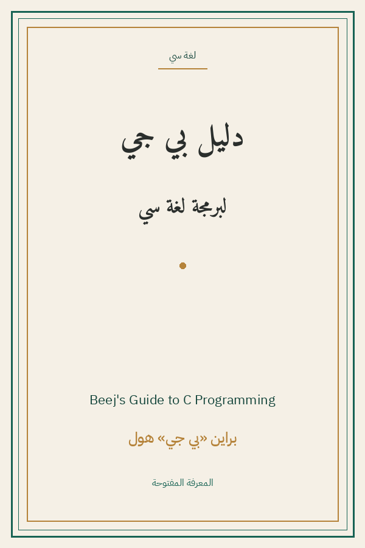

Beej's Guide to C Programming
دليل بي جي لبرمجة لغة سي
البرمجة والتقنية
رخصة بي جي
ترجمة كاملة
دليل بي جي المرجعي الكامل للغة C من أول printf إلى موضوعات النخبة: المؤشرات والمصفوفات والبنى والملفات والذاكرة الديناميكية، فالمعالجات المتغيرة والمتزامنة والذرّيات وحساب الأعداد العقدية — كله بأسلوب بي جي الفكاهي وأمثلته الشهيرة. الشيفرة محفوظة بايت ببايت مع تعليبات مترجمة.
| المؤلف | براين «بي جي» هول — Brian "Beej" Hall |
| سنة النص الأصلي | ٢٠٢٣ |
| كلمات المصدر (الإنجليزية) | ١٠٤٦٤٤ |
| كلمات الترجمة (العربية) | ٩٠٦١٧ |
| مقاطع الترجمة المدققة | ٦١ |
| مدة القراءة التقريبية | ≈ ٢٠٦٠ دقيقة |
الترخيص والحقوق: رخصة بي جي المفتوحة تسمح بالتوزيع والترجمة المجانية مع الإشارة للمصدر. المصدر: beej.us/guide/bgc/